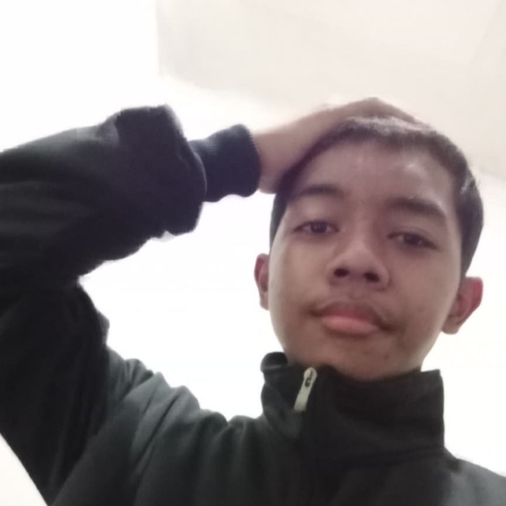

>ROLES

SUBHAN SIHABUDIN
SKILLS<
>ABOUT<
<p> Hai, saya Subhan Sihabudin, seorang lulusan SMP yang tertarik dengan
Teknologi dan bahasa asing.
Saat ini saya sedang mempelajari Web BackEnd
Development, IOT, wettpad dan menulis dan berbicara dalam
bahasa Jepang dan
Jerman. </p>
<p>
Selain itu, saya juga sering membantu mengajarkan junior extra
tentang cara penggunaan komputer sehari-hari.
Saya memiliki
pengalaman dalam berorganisasi,
seperti menjadi anggota
OSIS dan menjadi ketua
ekstrakurikuler TIK (Teknologi Informasi
Dan Komunikasi). </p>